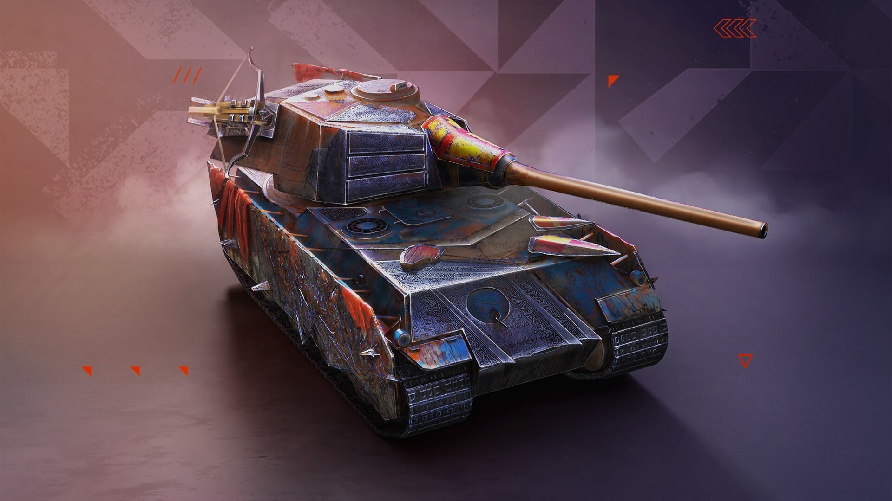
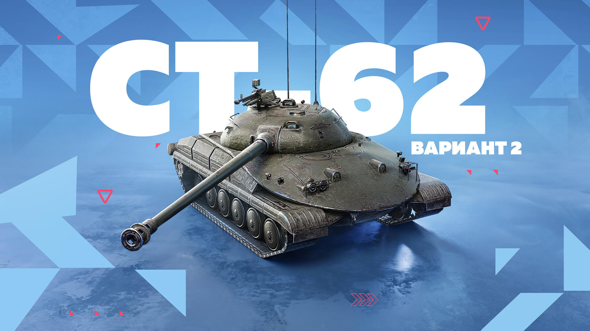
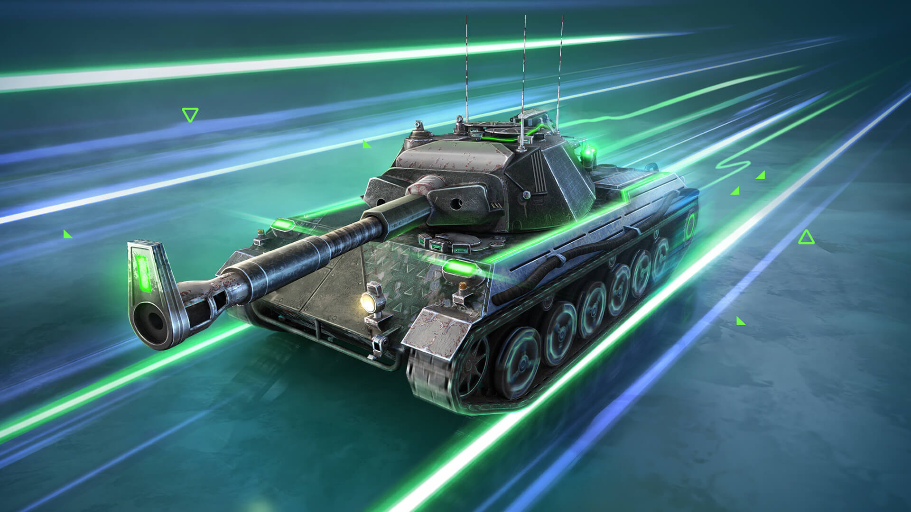

ТТ / Первая линия
Тяжёлые танки
Принимают участие в борьбе за ключевые позиции. Используют броню и укрытия; особенно нуждаются в прикрытых флангах.
В Tanks Blitz есть лёгкие, средние и тяжёлые танки, а также ПТ-САУ. Выбирай роль под темп короткого боя 7×7 и учитывай действия союзников.
Класс задаёт направление. Конкретная машина уточняет стиль.

Принимают участие в борьбе за ключевые позиции. Используют броню и укрытия; особенно нуждаются в прикрытых флангах.

Поддерживают союзников и усиливают нужный фланг. Подвижность помогает сменить направление, когда в бою 7×7 меняется баланс сил.

Разведывают позиции соперника и ищут пространство для манёвра. Подвижность полезна, когда команда может поддержать обнаруженную цель.
ПТ-САУ — противотанковые самоходные установки. Поддерживают союзников огнём и контролируют направления; позицию нужно выбирать с учётом особенностей конкретной машины.
В стандартном бою Blitz сражаются команды по семь игроков. Согласуй направление с союзниками и выбирай позицию, на которой роль твоей машины приносит пользу.
Ориентиры для начинающего игрока, без характеристик конкретных машин.
| Класс | Основная задача | Что учитывать | Материал |
|---|---|---|---|
| Тяжёлый танк | Удержание направления | Укрытие корпуса и поддержка фланга | Позиция и укрытие → |
| Средний танк | Поддержка и смена направления | Пути движения и положение союзников | Командная работа → |
| Лёгкий танк | Обнаружение противника | Обзор, маскировка и возможность отступить | Разобрать местность → |
| ПТ-САУ | Контроль линии прострела | Сектор огня и запасной маршрут |
Фон таблицы: vehicle-table-background.png; фон ячейки: table-cell-background.png. Миниатюра открывает отдельную страницу с изображением 600 × 400.